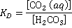
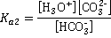

Carbonic acid, H2CO3
 Hard water
Hard water
 Water softening
Water softening
 Magnetic descaling
Magnetic descaling
 Carbon dioxide hydration and equilibria
Carbon dioxide hydration and equilibria
 Carbon dioxide compared with carbon monoxide
Carbon dioxide compared with carbon monoxide
It is difficult to remove traces of carbon dioxide from an aqueous solution and, once removed, aqueous solutions rapidly take up CO2 from any exposure to the atmosphere.
Carbon dioxide (CO2) is a colorless, odorless gas. Liquid CO2 only forms above 0.51 MPa, liquid density 1101 kg ˣ m−3, -37 °C; sublimation point, -78.5 °C, 0.10135 MPa, solid density 1562 kg ˣ m−3 increasing with decreasing temperature; triple point, 216.55 K, 518 kPa, gaseous density, 1.98 kg ˣ m−3 (at 0 °C, 100 kPa); critical temperature 31.1 °C, critical pressure 7.38 MPa, critical density 467.6 kg ˣ m−3, 13C content 1.1%. CO2 is very soluble in water with 3.346 grams of CO2 dissolving in water at 0 °C (1.713 LCO2 gas ˣ L−1liquid water at 0.10135 MPa partial pressure CO2). CO2 is a linear molecule with the C=O bond length 0.114 nm and charges on the O and C atoms of -0.446 and + 0.892, respectively (using ab initio 6-311** calculation).
Massive deposits of solid CO2 have been discovered at Mars's south pole and appear to be flowing like glaciers on Earth. It has zero dipole moment with low thermal and electrical conductivity. Adding dry ice to water causes a thick water fog to form from the liquid water. The common name for solid form of carbon dioxide is 'dry ice', first made commercially in 1925 by the DryIce Corporation of America.
pKa1 values along the saturation line
CO2 undergoes slight hydration (≈ 0.26 %) to H2CO3 (O=C(OH)2, see below right) in solution with the resulting weakly acidic H2CO3 ionizing slightly.
The
pKa1
varies with temperature ( [1862] see right) due to the higher CO2 solubility at low temperatures and as described elsewhere.
The following equilibria occur (data at 25 °C, with all constants changing with temperature) with some debate over the exact values of the constants [1852, 2192]. Calcium carbonate equilibria are given on the water descaling page.
| CO2 (g) + H2O |
|
KH = 29 1 [IAPWS] |
| CO2 (aq) + H2O |
 |
KD = 590 |
HCO3− CO2 (aq) + H2O |
||
| H2CO3 + H2O |
|
K1 = 0.25 mM |
|
Ka1 = 0.45 µM (apparent) pKa1 = 6.35 |
|
| HCO3− + H2O |
 |
Ka2 = 0.047 nM
pKa2 = 10.33 |
1 [CO2] is dissolved CO2, mol ˣ L−1 and, if determined from solubility, also contains H2CO3, HCO3− and CO32−;
pCO2 is the partial pressure of CO2 in the gas phase, atm.
H2O + CO2  H2CO3 catalyzed by HCO3− [3819] as given by ab initio 6-311** calculations.
H2CO3 catalyzed by HCO3− [3819] as given by ab initio 6-311** calculations.
Bicarbonate can similarly catalyze many hydrogen transfer reactions (e.g., keto-enol and imine-amine)
These equilibria are shifted in alkaline solution (pH > ~5) where OH− ions remove the H3O+ ions
H3O+(aq) + OH−(aq)  2 H2O(aq) Keq = 1014 ; 25 °C
2 H2O(aq) Keq = 1014 ; 25 °C
Thus in alkaline solutions, the total concentration of carbonate carbon species ([H2CO3] + [HCO3− ] + [CO32−]) increases considerably (mouse over the figure below right). In addition to these equilibria, there should always be a balance of charges in solution (positive charges = negative charges), thus typically,
[H3O+] + [Na+] + [K+] + 2 ˣ [Ca2+] + 2 ˣ [Mg2+] = [ Cl−] + 2 ˣ [S042−] + [HCO3−] + 2 ˣ [CO32−] + [OH−]
H2O + CO32-  HCO3− + HO− as given by ab initio 6-311** calculations
HCO3− + HO− as given by ab initio 6-311** calculations
Carbon dioxide (CO2) aqueous equilibria; mouse over
There is some dispute over the reaction of CO2 (aq) with H2O [2185], with the possibility that the reactions are
CO2 (aq) +2 H2O  H3O+ + HCO3− (slow)
H3O+ + HCO3− (slow)
H3O+ + HCO3− H2CO3 + H2O (fast)
H2CO3 + H2O (fast)
The relative concentrations of the CO2 dissolution products are shown right [2317], with absolute concentrations corresponding to 0.032% atmospheric CO2 shown on mousing over the image.
As an example, water in equilibrium (25 °C) with pCO2 = 1 atm forms about 33.6 mM CO2 (aq) solution of pH 3.9, containing about 57 µM carbonic acid (H2CO3), 0.12 mM HCO3− and 0.056 nM CO32−. Water in equilibrium with the atmosphere (0.04 %) has a concentration of about 15 µM CO2 (aq) and a pH of about 5.6.
If CO2-containing solutions are frozen, the excess CO2 appears to hydrate to form H2CO3 dissociating to give bicarbonate anions upon thawing [3450].
Physiological acid-base balance may be described in different ways to the above to aid the understanding of complex acid-base clinical disorders [3364].
The variation of CO2 solubility and pH has been modeled [4005]. Although CO2 in solution under ambient conditions is mainly dissolved CO2 (aq), under pressure in deep Earth conditions (at 11 GPa and 1000 K), it is found almost entirely as solvated carbonate CO32−(aq) and bicarbonate HCO3− (aq), where carbonic acid H2CO3(aq) is more abundant than CO2(aq) [3764].
[Back to Top  ]
]
Carbon dioxide (CO2) and carbon monoxide (CO) solubilities
Carbon dioxide may be reduced to carbon monoxide [4351].
CO2 + e−  CO2− E°' = -1.85 V
CO2− E°' = -1.85 V
CO2− + H2O  [CO2H] + OH−
[CO2H] + OH−
[CO2H] + e−  CO + OH−
CO + OH−
Carbon dioxide (CO2) is more soluble than carbon monoxide (CO) in water [IAPWS ], which is strange as it is both larger and without a dipole moment. The solubilities are explained by specific hydrogen-bonding between the oxygen atoms [166 ] in CO2 and water molecules and the of vibrational energy [2192 ]. However, this explanation fails at low temperatures [2192 ], where the influence of the change in water structuring becomes critical; the solubility of CO2 increasing dramatically in supercooled water.
Charge on the CO and CO2 molecules as given by
an ab initio 6-311** calculation
CO is proposed as being less soluble as it only has a very small dipole (0.122 D) and a low charge on the oxygen weakens possible hydrogen bonding. Surprisingly, the minimum energy for singly hydrated CO has the CO molecule lying in the water plane with the carbon atom pointing towards the H atom of the H2O molecule [3104, 3802].
O=C···H-O-H
CO2 in an 18-molecule water dodecahedral cluster
CO2(aq) has much weaker hydrogen bonding than the hydrogen bonds connecting H2CO3 to H2O [2230]. The CO2 may be considered hydrophobic. It forms either a hydration shell from the dodecahedral arrangement of 18 water molecules, where each CO2 oxygen atom is hydrogen-bonded to three water molecules, or a complete 20-molecule dodecahedral shell. Probably an oscillating combination of both. Such hydrogen bonding is likely to be weak, transient, and exchanging between a continuum of structures. Probaly an oscillating combination of both. Such hydrogen bonding is likely to be weak, transient, and exchanging between a continuum of structures. This allows some cooperation between the hydrogen bonding at both ends of the CO2 molecule. The weak hydrogen bonds formed between water and CO2 may easily break (forming surrounding whole or partial dodecahedra) and exchange. Further, it may undergo temperature-dependent structural transformations at near-physiological temperatures [3675].
Such clusters can form the central part of an icosahedral water cluster (CO2(H2O)278) possessing just two defects (water molecules with only three rather than four hydrogen bonds). In this model, there are six water molecules closest to the CO2, in agreement with many studies [499].
Correlation functions for CO2 within an icosahedral water cluster
.
The calculated carbon-oxygen pair correlation functions (PCF) are remarkably similar to those predicted by the icosahedral model. The dashed red lines [166] and solid blue lines [2332] are the calculated pair correlation functions between the carbon atom in CO2 and the oxygen atoms of water. The bars are the predictions from the icosahedral model. The solid bars were published 14 years before the solid blue line. Note that a similarly good fit is apparent if the central cluster is tetrakaidecahedral rather than dodecahedral. Such occupied 51262 inner-shell clusters are found to be more stable using theoretical modeling [876]. A similar distribution is given from the analysis of ab initio molecular dynamics simulations [4405].
Notably, the calculated pair correlation functions between CO and water [166] are consistent with the CO molecules sitting centrally (clathrate-like) in expanded icosahedral water clusters; CO only forming extremely weak complexes to water (major, HOH---CO; minor H2O---OC).
For interactive Figures of the central dodecahedral cluster, see Jmol.
[Back to Top  ]
]
At high pressures (for example, >2 MPa) and low temperatures (for example, <4 °C) CO2, forms crystalline clathrates (type CS-I clathrate, 46 H2O:8 CO2 maximum), within a cubic arrangement of two dodecahedral (512) and six tetrakaidecahedral (51262) cages. In these structures, there is no hydrogen bonding between the CO2 guest molecules and the water clathrate lattice, and the CO2 molecules occupy both cages but prefer the tetrakaidecahedral cages.
Compression of CO2-clathrate hydrates gives rise to a range of products [3059], including solid H2CO3 and dry ice (solid CO2). CO2-filled ice is formed from the CS-I hydrate [3059c]. In contrast, CS-II gives a chiral structure [3059b], similar to ice-XVII, which is created with large open spiral channels containing the freely-moving CO2 guest molecules (1:3.5 CO2: H2O, compared with 1:2 H2: H2O for the pre-ice-XVII structure). It has been suggested that ice XVII may be used as a cheap, practical, and environmentally friendly microporous material for the storage of CO2.
Carbon dioxide clathrate formation has been proposed as a method of tackling global warming on its own (by removing CO2from the atmosphere) or in combination with releasing methane clathrate (for energy production) from the seafloor. Liquid CO2 quickly reacts with water under sufficient pressure (e.g., on the seafloor, at a depth of 2700 m - 4500 m) to form its clathrate hydrate (CO2.5.75 H2O), then would swell to many times its original size. This reaction is strongly exothermic [271 kJ ˣ kg−1 of water). As the clathrates later dissolved, the use of this methodology for the permanent disposal of CO2 on the seafloor was concluded as probably not realistic [3328].
Carbon monoxide also preferably forms S-I clathrate hydrate at low pressures but with S-II hydrate forming on storage at 10 MPa and 252 K for 12 weeks. The large cages of the CS-I carbon monoxide hydrate are able t0 absorb or release CO guest molecules with possible multiple occupancies of up to 1.39. In contrast, the small cages remain singly occupied [3327]. The stretching Raman bands of the encapsulated CO molecule differ depending on whether they are small (512; slight Raman shift, cm−1) or large (51262; greater Raman shift, cm−1) clusters.
[Back to Top  ]
]
cis-cis H2CO3, a two-dimensional structure
Carbonic acid in aqueous solution plays an essential role in living systems as part of the bicarbonate buffer system to maintain acid-base homeostasis (see above). It forms carbonates and bicarbonates. Although molecular H2CO3 exists in an aqueous solution, it decomposes to carbon dioxide and water on any isolation attempts. In contrast to the bisulfate ion, the bicarbonate ion is a base; i.e., it donates its proton only in alkaline solutions [4005].
Carbonic acid stabilized by Cl− ion
However, both solid and gaseous carbonic acid has been prepared by other methods [3325]. The solid sublimes directly to the vapor state on warming up to -30 °C. Spectroscopic analysis showed that the carbonic acid vapor contained cis-cis and cis-trans monomers plus a hydrogen-bonded cyclic dimer (H2CO3)2.
Carbonic acid forms complexes with halide ions (see left) in the gas phase, as characterized by negative ion photoelectron spectroscopy and ab initio calculations [4017].
A crystalline hydrate of H2CO3 (H2CO3.H2O) is formed at high pressures and low temperatures (6.5 GPa, 140°C)) where the molecules lie co-planar in flat sheets [3326].
[Back to Top  ]
]
Home | Site Index | Sulfate-water cluster | Magic number clusters | Icosahedral water clusters | LSBU | Top
This page was established in 2004 and last updated by Martin Chaplin on 12 January, 2022